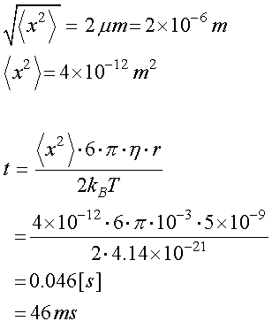
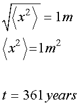

では，直径１０ｎｍの球体が，２μｍ移動するには，どのぐらいの時間がかかるのでしょう？

となり，４６ｍｓ，程度で移動することが可能です．
つまり，
大腸菌程度なら端のシグナルが，５０ｍｓ程度でもう一つの端まで到達可能である
と言うことを意味します．
では，１ｃｍ移動にはどの程度時間がかかるのでしょう？
となり，えらく時間がかかりますね．
それなら，１ｍ移動はどうでしょう？

なんと，生命１個体にとっては，永遠の時間です．
これは，距離の自乗に比例していることが大きく影響します．
つまり，１ｍのオーダーの生命体にとっては，拡散運動のみでは物質の移動は不可能なのです．
逆に言えば，大腸菌レベルなら，拡散運動のみで十分に物質の移動は可能なのです．
それ故，我々には血液の流れのような能動的な輸送手段が必要となってくるのです．